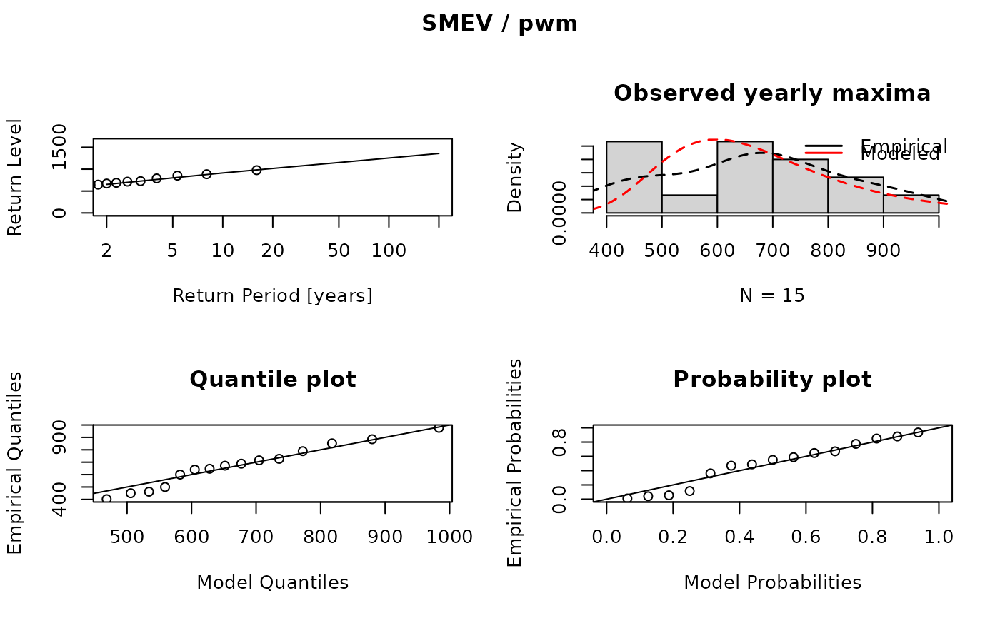
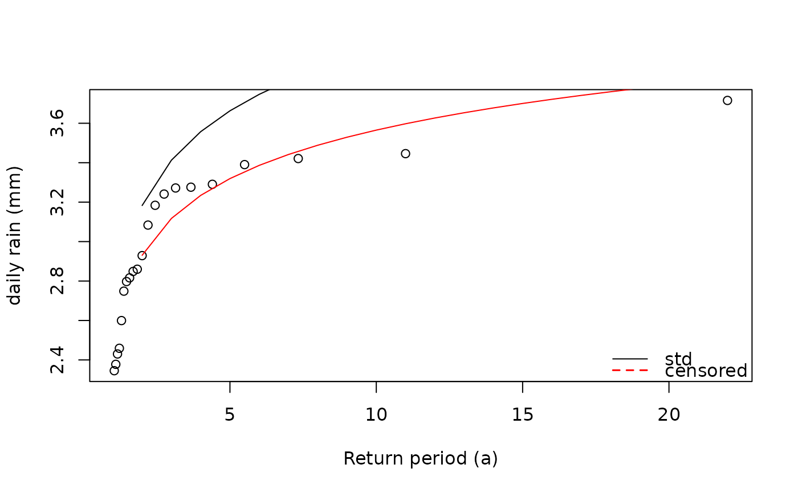

Fitting the simplified Metastatistical Extreme Value Distribution (SMEV)
fsmev.RdFit the SMEV distribution to rainfall observations with different estimation methods.
Arguments
- data
The data to which the SMEV should be fitted to.
datamust be a data.frame with two columns. The first column must contain dates of classDate, the second or last column must contain the rainfall values corresponding to datums in the rows. No negative values are allowed. NA values are removed with a warning.- threshold
A numeric that is used to define wet days as values > threshold. \(data <= threshold\) is set to NA.
- method
Character string describing the method that is used to estimate the Weibull parameters c and w. Possible options are probability weighted moments (
method='pwm'), maximum likelihood (method='mle') or least squares (method='ls'). Thedefaultispwm. (see details).- censor
If
censor=TRUE, the data series will be left-censored to assure that the observed maxima are samples from a weibull tail. Defaults tocensor=FALSE.- censor_opts
An empty list which can be populated with components
thresholds,mon,nrtrialsandR. They give the range of quantiles used as left-censoring threshold, the month with which the block starts, the number of trials used to achieve a weibull fit to the left-censored sample, and the number of synthetic samples used for the test statistics, respectively. See alsoweibull_tail_test.- warn
If
TRUEwhich is the default, warnings about censoring are given.- sd
If
sd=TRUE, confidence intervals of the SMEV distribution are calculated (see details).- sd.method
Currently only a non parametric bootstrap technique can be used to calculate SMEV confidence intervals with
sd.method='boot'. The default issd=FALSE.- R
The number of samples drawn from the SMEV distribution to calculate the confidence intervals with
sd.method='boot'
Value
A list of class mevr with components:
- c
Single value of the Weibull scale parameter of the SMEV.
- w
Single value of the Weibull shape parameter of the SMEV.
- n
Mean number of wet events, averaged over all years. Wet events are defined as rainfall >
threshold.- params
A named vector of the fitted parameters.
- maxima
Maximum values corresponding to each year.
- std
Standard error of fitted parameters (if
sd=TRUE).- varcov
Covariance matrix of fitted parameters (if
sd=TRUE).- data
\(data >= threshold\) used to fit the SMEV and additional components which may be useful for further analysis.
- years
Vector of years as YYYY.
- threshold
The chosen threshold.
- method
Method used to fit the MEVD.
- censor
TRUEwhen the data-series was left-censored andFALSEotherwise.- type
The type of distribution ("SMEV")
- rejected
If
censor=TRUE,rejected=TRUEwhen the Weibull tail assumption is rejected andrejected=FALSEotherwise. Ifcensor=FALSEthis value is not returned.
Details
The SMEV was introduced by (Marra et al., 2019) as a simplified version of the MEVD
(Marani and Ignaccolo, 2015) with the assumption of a stationary parent Weibull distribution
as
$$F = [1 - exp(-x/C)^w]^n$$
for \(w > 0\) and \(C > 0\) being the Weibull shape and scale parameter and
\(n > 0\) being the mean number of wet days over all years.
Wet days are defined as rainfall events > threshold. As it was shown by
e.g. Schellander et al., 2019, probability weighted moments should be preferred over
maximum likelihood for the estimation of the Weibull parameters w and C. Therefore
method = 'pwm' is the default.
Confidence intervals of the SMEV distribution can be calculated using a non parametric bootstrap technique. Note that this very slow.
This function returns the parameters of the fitted SMEV distribution as well as some additional fitting results and input parameters useful for further analysis.
References
Marra, F. et al. (2019) 'A simplified MEV formulation to model extremes emerging from multiple nonstationary underlying processes', Advances in Water Resources. Elsevier Ltd, 127(April), pp. 280-290. doi: 10.1016/j.advwatres.2019.04.002.
Examples
data(dailyrainfall)
fit <- fsmev(dailyrainfall)
fit
#> MEVD fitting
#>
#> Type: SMEV
#> Estimator: pwm
#>
#> Parameters:
#> Scale C:
#> [1] 89.59
#>
#> Shape w:
#> [1] 0.8643
#>
#> Mean number of wet events n:
#> [1] 179.2
#>
#> Threshold:
#> [1] 0
plot(fit)

# left censor data prior to fitting
set.seed(123)
sample_dates <- seq.Date(from = as.Date("2000-01-01"), to = as.Date("2020-12-31"), by = 1)
sample_data <- data.frame(dates = sample_dates, val = sample(rnorm(length(sample_dates))))
d <- sample_data |>
filter(val >= 0 & !is.na(val))
fit <- fsmev(d)
fit_c <- fsmev(d,
censor = TRUE,
censor_opts = list(thresholds = c(seq(0.5, 0.9, 0.1), 0.95),
mon = 1,
nrtrials = 2,
R = 100))
rp <- 2:100
rl <- return.levels.mev(fit, return.periods = rp)
rl_c <- return.levels.mev(fit_c, return.periods = rp)
plot(sort(pp.weibull(fit$maxima)), sort(fit$maxima),
xlab = "Return period (a)", ylab = "daily rain (mm)")
lines(rl$rp, rl$rl)
lines(rl_c$rp, rl_c$rl, col = "red")
legend("bottomright", legend = c("std", "censored"),
col = c("black", "red"), lty = c(1, 2), lwd = c(1, 1.5), bty = "n")
